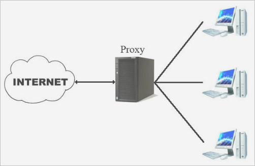
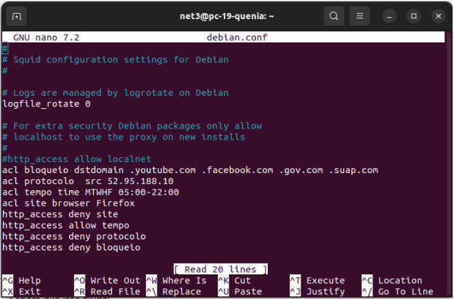

PROXY SQUID
O QUE É O PROXY SQUID?
É um servidor de proxy open source amplamente no Linux. Muito importante para a função de armazenamento em cache do conteúdo da web acessado pelos usuários.

OBS: Os proxies podem usar ACLs para controlar o acesso a recursos internos da rede, como servidores, pastas ou arquivos.
MAS O QUE É ACL?
ACL: LISTA DE CONTROLE DE ACESSO
Ou seja, São listas de regras que definem quais clientes podem acessar quais recursos.
Por exemplo, uma empresa pode usar um proxy para bloquear o acesso a sites de redes sociais ou de streaming de vídeo. Para isso, a empresa criaria uma ACL que bloqueia as URLs desses sites.
Instalação
Para instalar o squid no linux utilizamos o comando:
apt install squid
OBS: Para atualizar o sistema digite:
sudo apt update
Por vezes o squid nega o acesso quando é instalado, então vamos precisar desabilitar:
/etc/squid/squid.conf
Para isso, identifique uma linha que diz:
http access deny all
e substitua a palavra deny por allow. Dessa forma:
http access allow all
Traduzindo:
DENY: negar
ALLOW: permitir
Configuração
No ato da instalação foi criado o arquivo diretório chamado:
debian.conf
(esse nome pode variar, mas estou se referindo ao meu diretório)
- No 'debian.conf' será adicionado nossa ACL:
acl NOME_DA_ACL TIPO_DA_ACL parâmetro
AGORA VAMOS VER ALGUNS TIPOS DE ACL:
- dst = O destino pode um host,rede ou domínio.
ex: acl exemplo dst www.facebook.com
exemplo foi o NOME_DA_ACL
dst foi o TIPO_DA_ACL
- url = Especifica o URL de uma solicitação HTTP.
O URL pode ser um URL completo ou um prefixo de URL.
Por exemplo, para bloquear uma palavra usando a ACL tipo URL. Podendo usar a diretiva url_regex para especificar a palavra ou frase que deseja bloquear.
Imagine a situação que os pais querem bloquear no computador do seu filho toda a palavra "sexo", nesse caso, é só criar a seguinte ACL:
acl block_sexo url_regex "sexo"
- port = O parâmetro será uma porta ex: 3128
Para alterar a porta do Squid, localize a linha
http_port 3128
no arquivo de configuração. Altere o número da porta para o número que você deseja usar.
OBSERVAÇÃO:
Depois de adicionar a ACL ao arquivo de configuração, você precisará reiniciar o Squid para que as alterações tenham efeito.
Para reiniciar o Squid, execute o seguinte comando:
sudo systemctl restart squid
Ainda sobre os aquivos de configuração, é importante saber alguns comando para:
- habilitar
sudo service squid enable
- desabilitar
sudo service squid disable
- iniciar
sudo service squid start
- parar
sudo service squid stop
- testar
curl http://localhost:3128
- recarregar
sudo service squid reload
VEJA TAMBÉM:
Como acompanhar os logs (registro) de acesso:
tail -n 200 /var/squid/logs/access.log
pois através do tail ele permite visualizar as últimas linhas de um arquivo.
Teste
4 ACLS QUE FOI CONFIGURADA EM SALA DE AULA:

- acl bloqueio dstdomain .youtube.com .facebook.com .gov.com .suap.com
http_access deny site
(acl tipo dst) portanto, bloqueamos o acesso a esses sites pelo proxy squid.
- acl protocolo src 52.95.188.10
http_access deny protocolo
acl do tipo src.
Ou seja, a ACL "protocolo" identifica o tráfego proveniente do endereço IP 52.95.188.10.
A regra http_access deny protocolo bloqueia todo o tráfego HTTP proveniente desse endereço IP.
Na prática, pode ser uma medida de segurança para bloquear tráfego malicioso ou indesejado.
- acl tempo time MTWHF 05:00-22:00
http_access allow tempo
Nesse caso, o tipo da acl é tempo.
E foi adicionado as seguintes informações no comando acima:
-
Nome: tempo
-
Tipo: time (tempo)
-
Dias da semana: MTWHF (segunda a sexta)
-
Horário: 05:00-22:00
Essa ACL permite acesso somente nos dias de segunda a sexta, entre as 5h da manhã e as 22h da noite.
- acl site browser Firefox
http_access deny bloqueio
Essa ACL identifica requisições que são feitas especificamente pelo navegador Firefox.
A ACL bloqueia o acesso a todos os sites, independentemente da URL, quando acessados pelo Firefox.
Lembrando que a regra não afeta o acesso por outros navegadores, como Chrome, Edge, etc.
FEITO O TESTE TENTANDO ACESSAR O FIREFOX:

E como vocês podem ver apareceu a seguinte mensagem:
The proxy server is refusing connections
Que em português significa:
O servidor proxy está recusando conexões